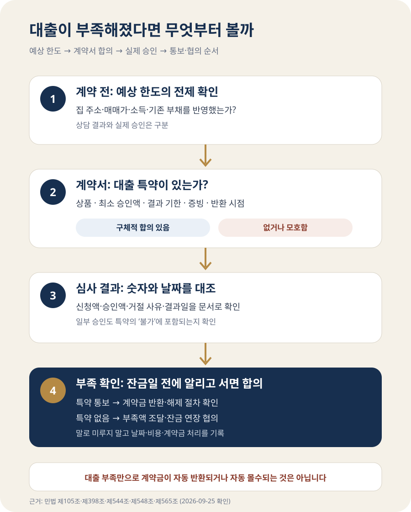

주담대가 예상보다 적게 나오면 아파트 계약금을 돌려받을 수 있을까?
주택담보대출이 거절되거나 예상보다 적게 나왔다는 이유만으로 매수인이 계약금을 당연히 돌려받는 것은 아닙니다. 매매대금을 마련하는 일은 원칙적으로 매수인의 계약 이행 문제이기 때문입니다. 다만 계약서에 ‘어떤 대출이, 얼마 이상, 언제까지 승인되지 않으면 계약을 해제하고 계약금을 반환한다’는 합의가 명확히 들어 있다면 그 약정에 따라 처리할 여지가 있습니다. 계약 전이라면 한도만 적지 말고 적용 조건과 증빙·통보기한까지 정하고, 이미 계약했다면 잔금일을 넘기기 전에 은행의 심사 결과를 문서로 받아 매도인과 즉시 협의해야 합니다.
‘최대 5억원 가능’과 ‘5억원 승인’은 같은 말이 아닙니다
집을 보기 전에 앱이나 상담 창구에서 대출 한도를 조회하면 매수 예산이 선명해 보입니다. 하지만 이 숫자는 입력한 소득·부채·집값 등을 바탕으로 계산한 예상치일 수 있습니다. 실제 대출은 신청인의 소득과 기존 부채뿐 아니라 매수할 주택의 담보가치, 권리관계, 상품 요건, 심사 시점의 규정과 금융회사 심사를 거쳐 확정됩니다.
따라서 “상담사가 가능하다고 했다”, “앱에서 5억원이 나왔다”는 사실만으로 매도인이 대출 결과를 책임지는 것은 아닙니다. 계약서에서 대출 성사를 계약의 조건으로 삼았는지가 별도 쟁점입니다. 법제처의 부동산 매매 안내도 매매를 매도인의 소유권 이전과 매수인의 대금 지급 약정으로 설명하고, 계약 전에 구입자금과 대출기준을 살피도록 안내합니다.
계약 직전에는 ‘최대 한도’ 대신 은행에 다음 질문을 해야 합니다. 이 집 주소와 매매가를 넣어 검토했는지, 소득·기존 대출 자료가 최신인지, 필요한 자기자금은 얼마인지, 승인 전까지 남은 심사가 무엇인지입니다. 답을 들었다고 승인으로 표현하지 말고 상담일·담당 창구·전제조건을 메모해 두세요.
대출 가능액만 맞아도 계약이 되는 것은 아닙니다. 계약금과 잔금 사이에 취득세, 중개보수, 등기 비용, 기존 집의 보증금 반환처럼 현금으로 나갈 항목이 겹칠 수 있습니다. 은행이 보내는 돈과 내가 잔금일에 준비해야 할 전체 금액을 따로 적고, 최소한의 생활비와 비상자금까지 모두 계약에 넣지 않았는지 확인해야 합니다.
대출 특약이 없다면 부족한 돈은 매수인이 마련해야 합니다
계약서에 대출에 관한 합의가 없다면, 대출 부족은 보통 매수인이 잔금을 준비하는 과정에서 생긴 문제로 다뤄집니다. 매도인이 약속한 날짜에 소유권이전 서류를 준비했는데 매수인이 잔금을 지급하지 못하면, 단순히 “은행이 적게 빌려줬다”는 사정만으로 계약이 없던 일이 되거나 계약금 반환 의무가 바로 생기는 것은 아닙니다.
민법 제544조에 따르면 한쪽이 채무를 이행하지 않으면 상대방은 상당한 기간을 정해 이행을 요구하고, 그래도 이행하지 않을 때 계약을 해제할 수 있습니다. 실제 계약서에는 잔금 미지급과 위약금에 관한 문구가 함께 들어 있는 경우가 많습니다. 그러므로 ‘대출 불발=계약금 자동 몰수’라고 단정하는 것도 정확하지 않습니다. 매도인의 이행 준비, 최고와 해제 통지, 계약서의 손해배상 약정 등을 함께 봐야 합니다.
| 상황 | 계약금이 자동 반환되나 | 먼저 볼 것 |
|---|---|---|
| 대출 관련 약정 없음 | 대출 부족만으로는 어렵습니다 | 잔금일, 해제·위약금 조항, 매도인의 이행 준비 |
| ‘대출 불가 시 반환’만 기재 | 문구 해석 다툼이 남을 수 있습니다 | 일부 부족도 불가인지, 기한·원인·증빙 |
| 상품·최소금액·기한·반환을 구체적으로 합의 | 합의한 조건 충족 여부에 따라 판단합니다 | 은행 결과서, 신청·통보 시점, 예외 사유 |
| 매수인이 신청을 늦추거나 자료를 내지 않음 | 특약이 있어도 보호받기 어려울 수 있습니다 | 성실한 신청 의무와 제외 사유 |
‘계약금을 포기하고 해제’와 ‘잔금을 못 낸 경우’를 구분하세요
계약금 이야기가 나오면 흔히 “매수인은 계약금을 포기하면 언제든 끝낼 수 있다”고 생각합니다. 민법 제565조는 다른 약정이 없고 당사자 한쪽이 이행에 착수하기 전이라면, 계약금을 준 사람은 이를 포기하고 받은 사람은 배액을 상환해 계약을 해제할 수 있도록 합니다. 이것이 계약금의 ‘해약금’ 기능입니다.
하지만 상대방이 이미 이행에 착수했거나 해약금 해제가 가능한 시기를 지났다면 같은 방식으로 정리되지 않을 수 있습니다. 잔금일에 돈을 지급하지 못해 채무불이행 문제가 된 경우에는 계약서의 해제·손해배상 약정과 실제 진행 경과를 봅니다. 계약금이 위약금 또는 손해배상액의 예정으로도 약정돼 있는지도 중요합니다. 민법 제398조는 손해배상액을 미리 정할 수 있고, 위약금 약정은 손해배상액의 예정으로 추정한다고 정합니다.
결론은 “대출이 안 됐으니 계약금을 포기하면 끝”도, “무조건 계약금만 잃는다”도 아닙니다. 중도금 지급, 인테리어를 위한 인도, 근저당 말소 준비처럼 이행 착수와 관련된 사정, 계약서 문구, 상대방의 추가 손해 주장이 함께 문제 될 수 있습니다.

“대출 안 나오면 반환”만 쓰면 무엇이 부족할까요?
특약은 매수인만을 위한 주문 문구가 아니라 매도인과 매수인이 합의한 계약 내용입니다. 민법 제105조는 당사자가 법령의 임의규정과 다른 의사를 표시한 경우 그 의사에 따르도록 합니다. 법제처도 매매계약서에 정해진 단일 양식은 없고 당사자가 계약 내용을 정할 수 있다고 설명합니다. 다만 문구가 짧을수록 모든 문제가 해결되는 것은 아닙니다.
예를 들어 “대출 불가 시 계약금 반환”이라고만 쓰면 5억원 신청 후 4억9천만원이 승인된 경우도 ‘불가’인지, 금리가 예상보다 높아 매수인이 포기한 경우도 포함하는지, 한 은행만 신청하면 되는지 다툼이 생길 수 있습니다. 계약 체결 전 아래 항목을 숫자와 날짜로 합의할 필요가 있습니다.
- 대출의 범위: 일반 주택담보대출인지, 디딤돌대출 같은 특정 상품인지 적습니다.
- 최소 승인액: ‘전액’ 대신 계약을 이행하는 데 필요한 최소 금액을 정합니다.
- 확인 기한: 언제까지 신청하고 언제까지 결과를 통보할지 정합니다. 잔금일 당일 확인은 늦습니다.
- 대상이 되는 결과: 전액 거절뿐 아니라 최소금액 미만 승인도 포함할지 합의합니다.
- 제외 사유: 매수인의 서류 미제출, 고의적인 신용 악화, 단순한 금리 불만 등은 어떻게 볼지 정합니다.
- 증빙과 통보: 금융회사 결과 문서나 상담 기록 중 무엇을 누구에게 어떤 방식으로 보낼지 적습니다.
- 계약금 처리: 조건이 충족되면 계약을 해제하는지, 언제까지 얼마를 반환하는지, 별도 위약금이 없는지 정합니다.
특약 예문 하나를 그대로 복사하는 것은 권하기 어렵습니다. ‘대출 불가’가 매수인의 소득 문제인지, 해당 주택의 권리·담보가치 문제인지에 따라 당사자가 받아들일 위험이 다르기 때문입니다. 공인중개사에게 문구를 설명받고, 금액이 크거나 조건이 복잡하면 계약 전에 법률 전문가의 검토를 받는 편이 안전합니다.
5천만원이 부족해졌다면 계약금 7천만원부터 걱정하기 전에 계산할 것
매매가 7억원인 아파트를 계약하면서 자기자금 2억원, 주담대 5억원을 계획했고 계약금 7천만원을 지급했다고 가정해 보겠습니다. 실제 승인 가능액이 4억5천만원으로 확인되면 잔금까지 5천만원이 부족해집니다.
대출 특약이 없다면 매수인은 우선 부족액을 다른 합법적인 자금으로 충당할 수 있는지, 잔금일을 연장할 수 있는지 매도인과 협의해야 합니다. 계약금을 돌려달라고 일방 통보하는 것만으로 계약이 정리됐다고 생각하면 안 됩니다. 잔금 연장에 합의했다면 새 날짜와 지연에 따른 비용, 소유권이전 일정, 기존 임차인 퇴거 일정까지 서면으로 남겨야 합니다.
반대로 계약서에 ‘특정일까지 주택담보대출 최소 5억원이 승인되지 않으면 매수인이 그 결과를 문서로 통보하고 계약금을 반환받아 계약을 해제한다’는 취지의 합의가 있다면, 4억5천만원 승인이 그 조건에 해당하는지 문구와 증빙으로 확인합니다. 여기서도 자동으로 통장에 돈이 돌아오는 것은 아닙니다. 계약서가 정한 통보 방식과 기한을 지키고 당사자 간 해제·반환 처리를 명확히 해야 합니다.
이미 계약했다면 잔금일 전 이렇게 움직이세요
- 계약서 전체를 다시 읽습니다. 특약뿐 아니라 계약금, 중도금, 잔금, 해제, 손해배상 조항을 함께 봅니다.
- 은행의 결과를 문서로 받습니다. 신청 금액, 가능 금액, 결과일, 부족하거나 거절된 사유를 확인합니다. 단순 상담 메모와 정식 심사 결과를 구분합니다.
- 부족액과 날짜를 계산합니다. 잔금뿐 아니라 취득세·중개보수·등기비용까지 포함해 실제 부족액을 다시 계산합니다.
- 즉시 매도인에게 알립니다. 특약의 통보기한이 있다면 그 방법을 지킵니다. 기한이 없어도 잔금일 직전까지 미루지 않습니다.
- 연장이나 해제 합의는 서면으로 남깁니다. 말로 날짜만 미루지 말고 새 잔금일, 추가 비용, 계약금 처리와 다른 일정까지 적습니다.
- 일방적인 포기 통보 전 자문을 받습니다. 이미 중도금을 지급했거나 상대방이 이행에 착수했다면 결과가 더 복잡해질 수 있습니다.
계약이 해제되면 원상회복 문제가 생깁니다. 민법 제548조는 계약 해제 시 각 당사자가 상대방을 원상으로 회복시킬 의무가 있다고 정합니다. 하지만 반환할 금액, 이자, 손해배상 여부가 모두 같은 결론으로 정해지는 것은 아닙니다. 해제 원인과 계약서 약정에 따라 달라집니다.
자주 묻는 질문
공인중개사가 대출이 된다고 말했는데 책임을 물을 수 있나요?
그 말만으로 매도인에게 계약금 반환 의무가 생긴다고 단정할 수 없습니다. 누가 어떤 자료를 보고 무엇을 보장했는지, 계약서에 반영됐는지, 중개 과정의 설명과 증거가 있는지를 따로 확인해야 합니다. 대출 승인 주체는 금융회사이므로 계약 전에는 은행 확인과 계약서 합의를 분리해 챙기세요.
한 은행에서 거절되면 특약 조건을 충족한 건가요?
특약 문구에 따라 다릅니다. 특정 금융회사나 상품을 정했는지, 복수 금융회사 신청을 요구했는지, 최소 승인액과 기한이 있는지 봐야 합니다. ‘대출 불가’ 한 줄뿐이면 당사자 사이에 해석 차이가 생길 수 있습니다.
대출은 나오지만 금리가 너무 높으면 계약금을 돌려받을 수 있나요?
금리 상한이나 특정 상품 조건을 계약서에 합의하지 않았다면, 예상보다 높은 금리만으로 반환을 요구하기는 어렵습니다. ‘승인 여부’와 ‘원하는 조건의 승인’을 같은 뜻으로 보지 마세요.
잔금일을 한 번 늦추면 계약이 자동으로 유지되나요?
상대방과 합의해야 합니다. 새 잔금일과 비용을 서면으로 정하지 않으면 기존 계약의 지체 상태가 계속 문제 될 수 있습니다. 문자로 합의하더라도 대상 계약과 날짜·금액이 분명히 드러나게 남기세요.
공식 자료
- 국가법령정보센터 — 민법 제105조(임의규정)
- 국가법령정보센터 — 민법 제398조(배상액의 예정)
- 국가법령정보센터 — 민법 제544조(이행지체와 해제)
- 국가법령정보센터 — 민법 제548조(해제의 효과)
- 국가법령정보센터 — 민법 제565조(해약금)
- 법제처 찾기쉬운 생활법령 — 부동산 매매계약서 작성
정보 기준일: 2026-09-25. 이 글은 대출을 이용하는 주택 매매의 일반적인 확인 순서를 설명합니다. 계약금의 성격과 해제·손해배상 결과는 계약서 문구, 중도금 지급과 이행 착수 여부, 당사자의 통지 및 개별 사실관계에 따라 달라질 수 있습니다. 실제 계약 해제나 큰 금액의 반환 결정을 하기 전에는 계약서 원문을 가지고 법률 전문가와 상담하세요.
계약 전에 금액부터 다시 확인하세요
- 대출 한도 계산기소득·부채를 넣어 규제상 한도 점검
- 부동산 종합 계산기취득세·중개보수까지 포함한 필요 현금 확인